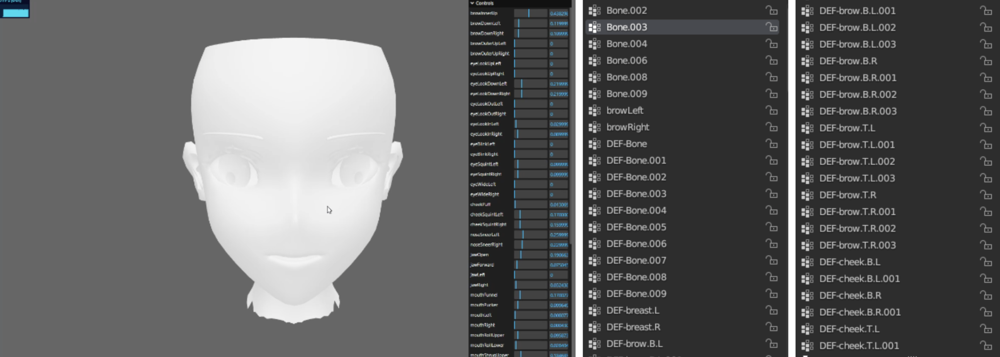
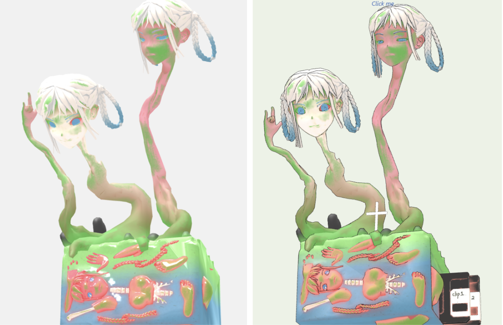
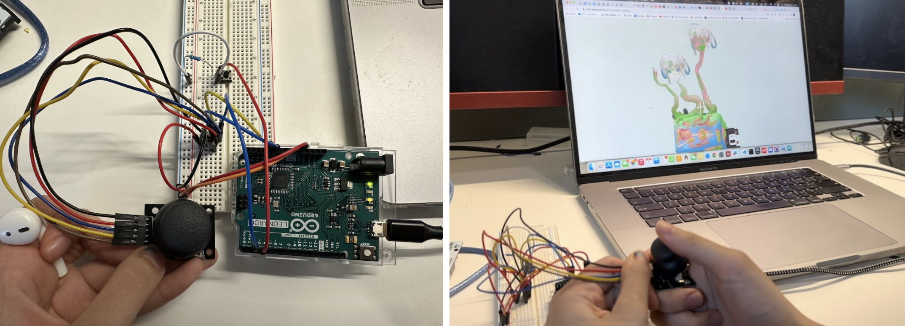

Introduction
This project is a chapter in an interactive novel that tells the story of a girl who, as a streamer, became lost in the virtual world. After her passing, her body was buried, but her two personalities' souls still wait in front of her grave, hoping to find someone to tell their story. By clicking on the disk in the picture, you can listen to her tale.
Concept and Background Research
The idea originally came from my motion capture work from last term, in fact, I have used all the assignments for this semester to expand this story, but in different forms of expression. Our previous project is a Visual Novel Game (a form of digital semi-interactive fiction, combine a textual narrative with static or animated illustrations and a varying degree of interactivity ), the player portrays a girl who works as a live streamer, and becomes deeply immersed in her online virtual persona, losing touch with the real world. After being abandoned by her fans, she becomes lost in the virtual world and eventually descends into madness, ultimately choosing to commit suicide.
Our Unity game allows players to explore the girl's room and follow her story from the beginning of her livestreaming career to her descent into madness after being betrayed by her fans. In Andy's class, I used Plotter to create a new ending for this story where the girl, Abra, chooses to face reality. However, in this project, the girl still chooses death. In the original ending, Abra's betrayal by her fans causes her to go mad. Ironically, after her death, her subscribers grows a lot.
I want to explore the delicate and fragile symbiotic relationship between virtual idols and their fans. To fans, idols are like gods, and their love for idols is a kind of platonic love for a purely virtual character. In other word, Idols are also constrained by their fans, and fan worship does not require idols to act as human beings or even exist in reality. The girl Maho, as a vtuber, the protagonist of this story is already at the intersection of the virtual and the real. When she is betrayed by her fans, she loses herself in her virtual persona and falls into madness. Even though her physical body is buried underground, her fans' love for her virtual persona persists, and it becomes disconnected from her identity as a real human. This project portrays the scene of the beloved girl's soul returning to the world.
I think this story is well-suited for an interactive visual novel on a website. Inspired by the game Needy Girloverload, my work also has two personas (Abra and Maho) narrating the story simultaneously. In the current scene, the two personas are represented by the two heads that grow from the grave. The story is based on the diary of the girl from our original game.
In terms of visual style, I was mainly inspired by the works of the Japanese painter Aida Makoto. In his works, anime girls with bright smiles create an atmosphere of eerie and bloody horror. I like using cute 2D anime characters to convey a sense of strangeness, terror, and madness. The artistic expression of this project is currently my favorite exploration.


Technical Implementation
Modelling part
*blendshapes and facial mocap
I created 52 morph targets for my model, originally intending to use websockets to upload data and control the morph targets in real-time. However, I ended up recording animations and storing them as clips within the glb file instead.
*Animations
There are two kind of animation in this project. One is morph targets animation, I recorded by facemotion3d, others are skeleton animations which are made in blender.

*optimization model
I use glTF files that I export to three.js, which works great for webGL. Simplifying the models is very important for models used in web pages, because my models have complex morph targets and the mesh count of the facial features can't be too low. I tried using draco to compress the files, but it didn't work well and caused some loss of morph targets. Eventually, I had to manually reduce the mesh count.

*Textures
I used a high poly model to make textures in substance painter，then mapped textures on a low poly model. To achieve the Toon effect, I also added an outline into this model.
Three.js part
Initially, my plan was to use facemotion3d, an iOS-based facial capture app, to control the shape keys of my tahree.js model. This app is widely used in the VTuber live streaming industry as a stable facial capture software, and it can transmit JSON files to software such as Unity. However, after trying for several days, I was not successful in using it on a web page. After that, I decided to go with the approach of interacting with objects in the scene and playing animations. At the same time, I also considered using it as an installation in exhibitions.
*diaglogue box
Initially, my plan was to use facemotion3d, an iOS-based facial capture app, to control the shape keys of my tahree.js model. This app is widely used in the VTuber live streaming industry as a stable facial capture software, and it can transmit JSON files to software such as Unity. However, after trying for several days, I was not successful in using it on a web page. After that, I decided to go with the approach of interacting with objects in the scene and playing animations. At the same time, I also considered using it as an installation in exhibitions.

*Skeleton follow mousemove
By controling the rotation degree of neck and waist bones base on mouse position, I can make the heads follow my mouse.

*Play animation
Firstly, convert animations inside the glb file into three.js clips and store them inside an array called possible animation. I want the heads move based on mouse position when play all of these animations , so I need to splice neck bones and waist bones from all clipsI want the heads move based on mouse position when play all of these animations , so I need to splice neck bones and waist bones in all clips. Function raycast here is used for picking up models by shooting layers with mouse at models. If you pick the right object in the scene, the code plays animation by function playOnClick. Basically there are three animations when a user clicks the disk: blendshapes animation, skeleton animation and disk insert animation. Function playOnClick is used to play animation from an array.

*Joystick
I wanted to make the exhibition more interactive, rather than relying solely on mouse control, so I looked into using a joystick and buttons, similar to a vintage game controller, for user interaction. The bottom is used as keys, so I added keyboard function which can call function playdisk as well.
Reflection and Future Development
I have always been interested in 3D animation and NPR render effects, such as toon shading or anime-style animation. However, before this term, I have always created animations in Blender and just rendered videos, without exploring how to incorporate them into interactive experiences or art installations. Therefore, even though this project didn't achieve my initial vision for interactivity, being able to showcase my model in WebGL and have real-time interaction still excited me. During this project, I encountered many challenges, from implementing stylized shader in Three.js to controlling bone and blendshapes and playing preset animations. Despite having only one week to complete the project, and some regrettable limitations, I worked hard and learned a lot. Now, I am very familiar with the workflow from Blender to Three.js. I also spent a lot of time designing the textures the model. Although this course should focus more on coding part, I also am very satisfied with the visual impact of the slightly eerie girl in this project. I hope to have the opportunity to finish her story in the future. Overall, I am very pleased with this experiment and it has provided me with the first step in establishing more complex and interesting interactions in Three.js in the future.
References
- S. Kon, Director, Perfect Blue, 1997 [Film]. Japan: Rex Entertainment, 1997.
- “Needy Girl Overdose”.[Online] Available:https://vi.wikipedia.org/wiki/Needy_Girl_Overdose
- Three.js document and examples: https://threejs.org/examples/#webgl_animation_keyframes https://threejs.org/docs/#api/en/audio/Audio https://threejs.org/examples/?q=morph#webgl_morphtargets_face https://moments.epic.net/#home
- “How to Create an Interactive 3D Character with Three.js By Kyle Wetton in Tutorials on October 14, 2019 How to Create an Interactive 3D Character with Three.js | Codrops
- Arduino reference https://www.arduino.cc/reference/en/language/functions/usb/keyboard/ https://docs.arduino.cc/built-in-examples/usb/KeyboardAndMouseControl
- dialogue box: https://developer.mozilla.org/en-US/docs/Web/HTML/Element/dialog